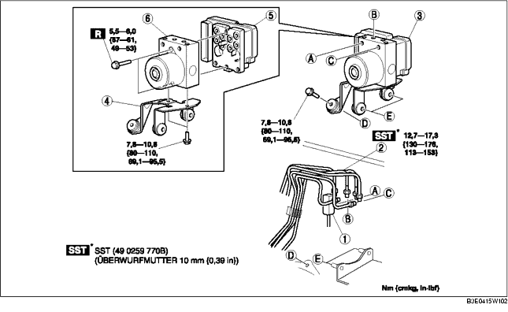

1. Die Batterie und den Batterieträger ausbauen. (Siehe BATTERIE AUSBAUEN/EINBAUEN [ZJ, Z6].) (Siehe BATTERIE AUSBAUEN/EINBAUEN [LF].)
2. Für LHD den Schlauch des Ausgleichsbehälters herausziehen (Fahrzeuge mit Schaltgetriebe). (Siehe Ausbauhinweis für Ausgleichsbehälterschlauch.) (Siehe Ausbauhinweis für Kupplungsleitung und Ausgleichsbehälterschlauch.) (Siehe Einbauhinweis für Ausgleichsbehälterschlauch.) (Siehe Einbauhinweis für Kupplungsleitung und Ausgleichsbehälterschlauch.)
3. Gemäß der Reihenfolge in der Tabelle ausbauen.
4. Der Einbau erfolgt in umgekehrter Reihenfolge.
5. Die Initialisierungsprozeduren für den Kombinationssensor und Bremsflüssigkeitesdruckgeber durchführen. (Siehe KOMBINATIONSSENSOR INITIALISIEREN.) (Siehe INITIALISIERUNGSVORGANG BREMSFLÜSSIGKEITSDRUCKGEBER.)
6. Störungscodes aus dem Speicher löschen. (Siehe Löschen von Störungscodes.)

.
|
1
|
Steckverbinder
(Siehe Ausbauhinweis für Steckverbinder.)
(Siehe Einbauhinweis für Steckverbinder.)
|
|
2
|
Bremsleitung
(Siehe Ausbauhinweis für Bremsleitung.)
(Siehe Einbauhinweis für Bremsleitung.)
|
|
3
|
DSC-Hydraulik-/Steuermodul, Halterung
|
|
4
|
Halterung
|
|
5
|
DSC-STEUERMODUL
|
|
6
|
DSC-HYDRAULIKMODUL
|
1. Eine Richtmarkierung auf der Bremsleitung und dem DSC-Hydraulik-/Steuermodul anbringen.
2. Den Steckverbinder mit Klebeband vor dem Eintritt von Bremsflüssigkeit schützen.
3. Die Bremsleitung ausbauen.
1. Wie abgebildet die Halterung in Pfeilrichtung bewegen und DSC-Hydraulik-/Steuermodul und Halterung entfernen.
1. Die voher angebrachten Markierungen aufeinander ausrictehn und die Bremsleitung wie abgebildet an das DSC-Hydraulik-/Steuermodul anschließen.